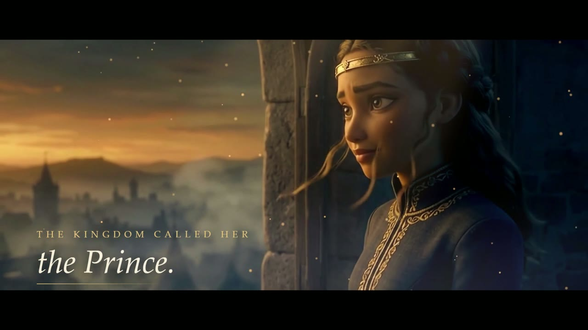
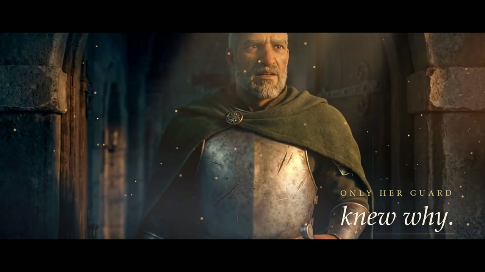
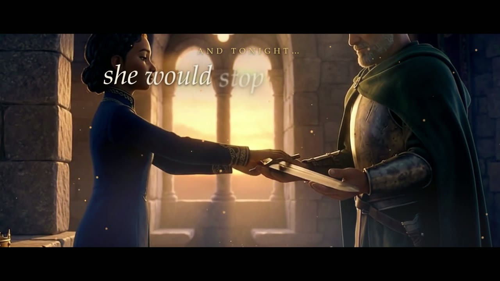
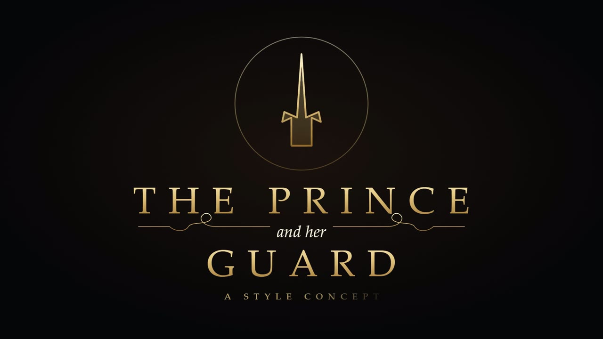
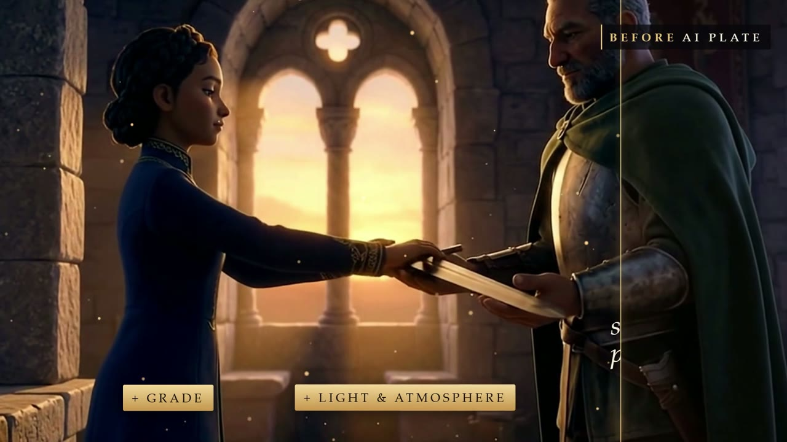
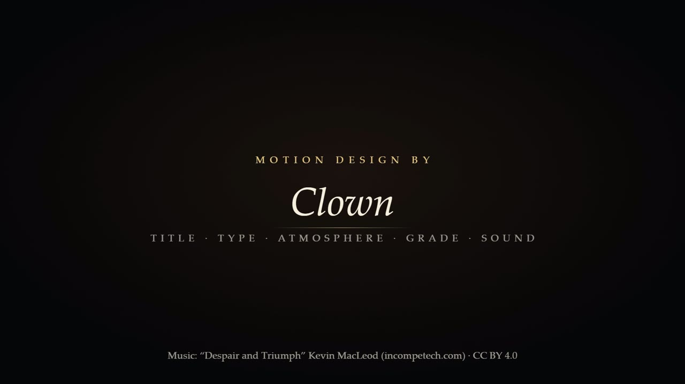

The Prince and Her Guard
“The kingdom called her the Prince. Only her guard knew why.” A style concept for an animated story: AI-generated characters and shots, finished with a narrated hook, designed type, atmosphere, a grade and a title where a crown redraws itself into a sword.
The brief
Show what turns AI footage into a film: keep two characters consistent across three shots, then add the story, design and motion that generated clips don't come with. Dusk light, gold serif type, a crown and a sword.
My role
Story, AI characters, title design, type, atmosphere, grade, sound.
Tools
AI characters and shots directed from one character reference · Composited in code: HTML and GSAP, frame-by-frame render · Graded and finished in ffmpeg
Self-initiated brief: The Prince and Her Guard is a fictional project made for this portfolio. Music: “Despair and Triumph” by Kevin MacLeod (incompetech.com), CC BY 4.0.
Styleframes





